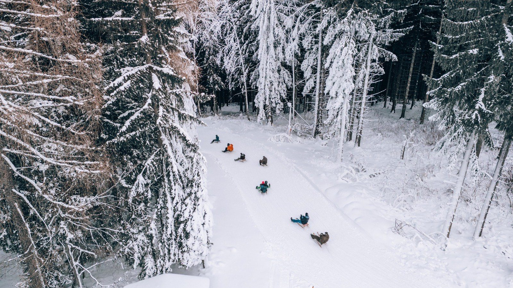
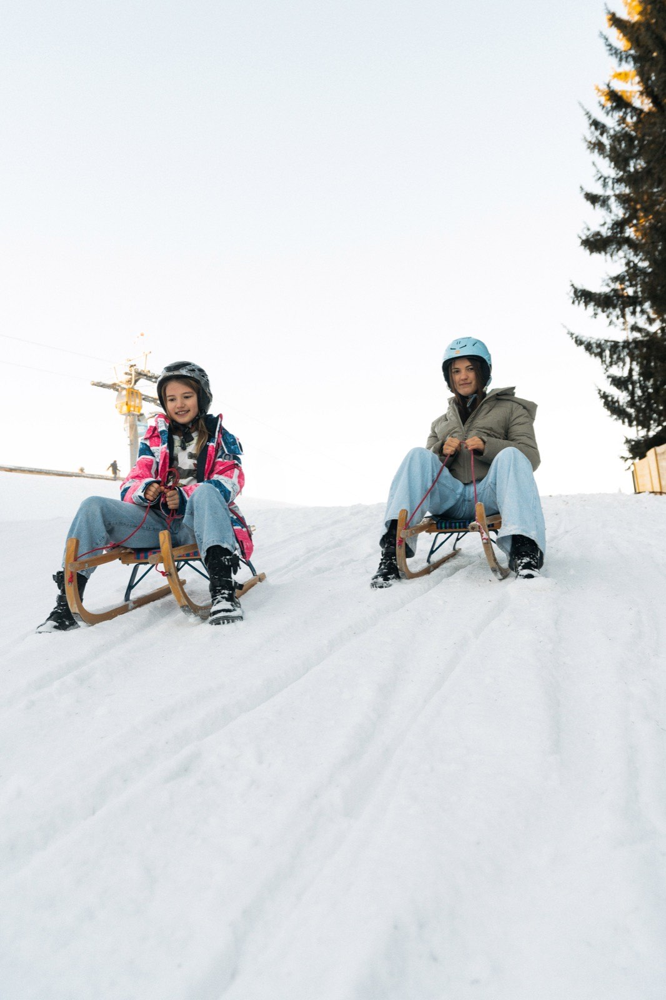
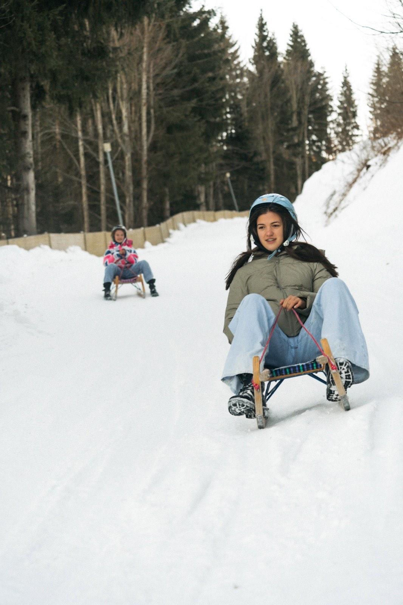
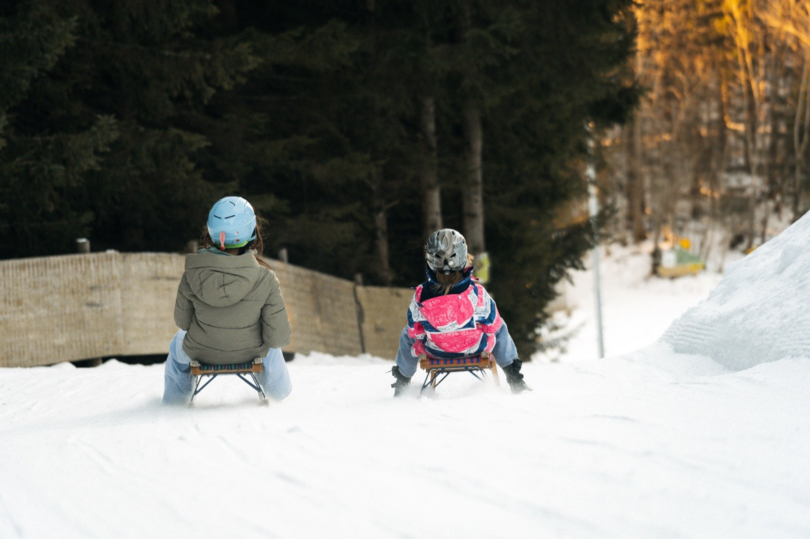

Rodeln am Semmering: 3 km bei FlutlichtTobogganing at Semmering: 3 km under floodlights
Winter-AttraktionWinter attraction· Saison ca. Ende November–März. Im Sommer am Berg: Bikepark, Wandern, Mountaincart & Waldseilgarten.· season approx. late November–March. In summer: bike park, hiking, mountain carts & ropes park.
Warum es besonders istWhy it’s special
3 km lange Erlebnis-Rodelbahn — die längste beleuchtete Rodelbahn Ostösterreichs. Tag & Nacht, Verleih vor Ort.A 3 km adventure toboggan run — the longest floodlit toboggan run in eastern Austria. Day & night, rental on site.
3 km 3 km Tag & Nacht day & night Familien families mit Liftticket with lift ticket
Rodeln in BildernTobogganing in pictures

Durch den verschneiten Wald ins TalThrough snowy forest down to the valley

Startklar am oberen Ende der BahnReady to go at the top of the run

Volle Fahrt auf der NaturrodelbahnFull speed on the natural toboggan run

Familien-Abfahrt — groß & kleinA family run — big & small
Abendstimmung auf der RodelbahnEvening mood on the toboggan run
← wischen →← swipe →
▶ In AktionIn action
3 km bei Flutlicht — echtes Rodelgefühl.3 km under floodlights — the real toboggan feel.
Gut zu wissenGood to know
Die BahnThe run
Rund 3 km — die längste beleuchtete Rodelstrecke Ostösterreichs. Start bei der Bergstation, über zahlreiche Kurven & Tunnel zurück ins Tal. Gemütliche Abfahrt ca. 15–20 min.About 3 km — Lower Austria’s longest floodlit toboggan run. Starts at the top station, through many curves & tunnels back to the valley. Easy descent approx. 15–20 min.
Tag & Nacht (Flutlicht)Day & night (floodlight)
Tagbetrieb + Nachtrodeln bei Flutlicht (18–21 Uhr). Betriebszeiten beachten.Day operation + night tobogganing under floodlights (6–9 pm). Check operating hours.
Rodel-Verleih & KarteToboggan rental & ticket
Leihrodel direkt an der Liftkassa um 10 € (für bis zu 2 Personen) oder eigene Rodel mitbringen. Normalkarte = Lift + Rodelbahn + Pisten; Kombi-Karte = zusätzlich Rodelverleih.Rental toboggan at the lift till for €10 (for up to 2 people) or bring your own. Standard ticket = lift + run + slopes; combo ticket = plus toboggan rental.
Alter & SicherheitAge & safety
Keine gesetzliche Altersgrenze — empfohlen ab ca. 4 J. in Begleitung, selbstständig ab ~6–8 J. (Kinder dürfen allein rodeln, wenn sie sicher lenken & jederzeit anhalten können). Helm & feste Schuhe dringend empfohlen; angepasstes Tempo, Abstand halten, am Rand auf-/absteigen, kein Alkohol. Lenkbobs sind erlaubt; aufblasbare, unlenkbare Fahrgeräte verboten. Die Bahn nicht zu Fuß begehen. Hunde (auch mitfahrend) nicht erlaubt.No legal age limit — recommended from ~age 4 accompanied, solo from ~6–8 (children may sledge alone if they can steer safely & stop any time). Helmet & sturdy shoes strongly recommended; adapt speed, keep distance, mount/dismount at the edge, no alcohol. Steerable bobs allowed; inflatable, non-steerable devices forbidden. Do not walk on the run. Dogs (incl. as passengers) not allowed.
Einkehr & GruppenDining & groups
Einkehrschwung ins Panoramarestaurant Liechtensteinhaus — mit dem beliebten Pfandl-Essen für Gruppen ist der gemütliche Hüttenabend garantiert.A stop at the Liechtensteinhaus panorama restaurant — with the popular Pfandl group meal, a cosy hut evening is guaranteed.
Familien-Tipp:Family tip:Hotelgäste: −10% auf Liftkarten (Voucher an der Rezeption).Hotel guests: −10% on lift passes (voucher at reception).
FAQ
Häufige FragenFrequent questions
Rund 3 km — die längste beleuchtete Rodelbahn Ostösterreichs. Start an der Bergstation, über Kurven und Tunnel zurück ins Tal; eine gemütliche Abfahrt dauert 15–20 Minuten.About 3 km — the longest floodlit toboggan run in eastern Austria. It starts at the top station and winds through curves and tunnels back to the valley; a leisurely descent takes 15–20 minutes.
Ja — Nachtrodeln bei Flutlicht von 18 bis 21 Uhr an den Nachtbetriebstagen. Betriebszeiten vorab checken.Yes — night tobogganing under floodlights from 6 to 9 pm on night-operation days. Check the operating hours beforehand.
10 € direkt an der Liftkassa — eine Rodel trägt bis zu 2 Personen. Eigene Rodeln sind natürlich willkommen.€10 right at the lift counter — one sledge carries up to 2 people. Your own toboggan is of course welcome.
Eine gesetzliche Grenze gibt es nicht — empfohlen ab ca. 4 Jahren in Begleitung, selbstständig ab etwa 6–8, sobald sie sicher lenken und jederzeit anhalten können.There's no legal limit — recommended from about age 4 accompanied, solo from around 6–8, once they can steer safely and stop at any time.
Lenkbobs ja — aufblasbare, unlenkbare Fahrgeräte sind verboten. Und bitte die Bahn nie zu Fuß begehen.Steerable bobs, yes — inflatable, non-steerable devices are forbidden. And please never walk on the run.
Helm und feste Schuhe dringend empfohlen, Tempo anpassen, Abstand halten, nur am Rand auf- und absteigen — und kein Alkohol.Helmet and sturdy shoes strongly recommended, adapt your speed, keep your distance, mount and dismount at the edge only — and no alcohol.
Die Rodelbahn ist mit dem Liftticket befahrbar; die Kombi Tageskarte + Rodelverleih gibt es ab 66,50 € (Erwachsene), Tag & Nacht ab 101 €.The run is included with your lift ticket; the day pass + toboggan rental combo starts at €66.50 (adults), day & night from €101.
Beim Einkehrschwung ins Liechtensteinhaus — für Gruppen mit dem beliebten Pfandl-Essen für den gemütlichen Hüttenabend.With a stop at the Liechtensteinhaus — groups love the Pfandl meal for a proper cosy hut evening.
Und im Sommer?And in summer?Bikepark, Waldseilgarten, Millennium Jump & Mountaincart — alles an einem Berg, 1 Stunde von Wien.Bike park, ropes park, Millennium Jump & mountain cart — all on one mountain, one hour from Vienna.
Hi! Ich bin Hirschi. Wobei kann ich helfen?Hi! I'm Hirschi. How can I help?
Fragen zu dieser SeiteAbout this page
Rund 3 km — die längste beleuchtete Rodelbahn Ostösterreichs. Start an der Bergstation, über Kurven und Tunnel zurück ins Tal; eine gemütliche Abfahrt dauert 15–20 Minuten.About 3 km — the longest floodlit toboggan run in eastern Austria. It starts at the top station and winds through curves and tunnels back to the valley; a leisurely descent takes 15–20 minutes.
Ja — Nachtrodeln bei Flutlicht von 18 bis 21 Uhr an den Nachtbetriebstagen. Betriebszeiten vorab checken.Yes — night tobogganing under floodlights from 6 to 9 pm on night-operation days. Check the operating hours beforehand.
10 € direkt an der Liftkassa — eine Rodel trägt bis zu 2 Personen. Eigene Rodeln sind natürlich willkommen.€10 right at the lift counter — one sledge carries up to 2 people. Your own toboggan is of course welcome.
Eine gesetzliche Grenze gibt es nicht — empfohlen ab ca. 4 Jahren in Begleitung, selbstständig ab etwa 6–8, sobald sie sicher lenken und jederzeit anhalten können.There's no legal limit — recommended from about age 4 accompanied, solo from around 6–8, once they can steer safely and stop at any time.
Lenkbobs ja — aufblasbare, unlenkbare Fahrgeräte sind verboten. Und bitte die Bahn nie zu Fuß begehen.Steerable bobs, yes — inflatable, non-steerable devices are forbidden. And please never walk on the run.
Helm und feste Schuhe dringend empfohlen, Tempo anpassen, Abstand halten, nur am Rand auf- und absteigen — und kein Alkohol.Helmet and sturdy shoes strongly recommended, adapt your speed, keep your distance, mount and dismount at the edge only — and no alcohol.
Die Rodelbahn ist mit dem Liftticket befahrbar; die Kombi Tageskarte + Rodelverleih gibt es ab 66,50 € (Erwachsene), Tag & Nacht ab 101 €.The run is included with your lift ticket; the day pass + toboggan rental combo starts at €66.50 (adults), day & night from €101.
Beim Einkehrschwung ins Liechtensteinhaus — für Gruppen mit dem beliebten Pfandl-Essen für den gemütlichen Hüttenabend.With a stop at the Liechtensteinhaus — groups love the Pfandl meal for a proper cosy hut evening.
Allgemeine FragenGeneral questions
Aktueller Status von Trails, Pisten, Liften & Hütten — live.Current status of trails, slopes, lifts & huts — live.Live-StatusLive status →
Empfehlungen & volle Preisliste für Sommer & Winter.Recommendations & full price list for summer & winter.Tickets & PreiseTickets & prices →
Hirschi-Spielplatz mit Goldwaschen & Kugelbahn, Waldseilgarten & Family-Bikepark.Hirschi playground with gold panning & marble run, ropes park & family bikepark.Familien-TagFamily day →
Family Lines & leichte Trails — hier rollt jeder los.Family lines & easy trails — everyone gets rolling.Zum BikeparkTo the bikepark →
Grand View im Sporthotel & Liechtensteinhaus am Gipfel.Grand View at the Sporthotel & Liechtensteinhaus at the summit.KulinarikDining →
Auto über die S6 oder Bahn bis Bahnhof Semmering; Gratis-Parkplatz im Tal.Car via the S6 or train to Semmering station; free parking in the valley.AnreiseDirections →
Wert- & Erlebnisgutscheine — Bergzeit zum Verschenken.Value & experience vouchers — mountain time to give.GutscheineVouchers →